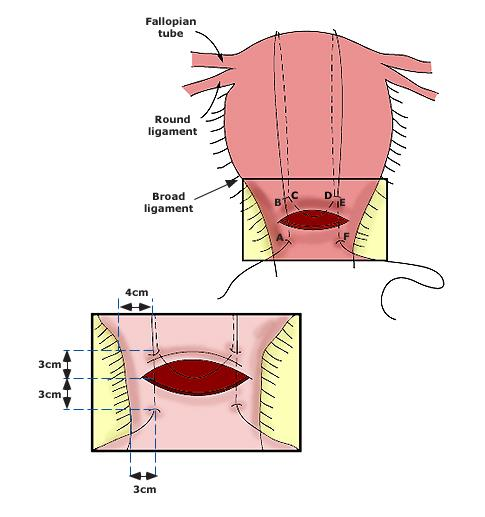
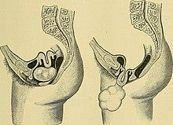

At the end of this chapter, the student should be able to:
Describe the definition, etiology, classification, diagnosis and management of postpartum hemorrhage.
Describe the definition, etiology, clinical diagnosis and management of uterine inversion.
Describe the definition, etiology, clinical diagnosis, complications and management of retained placenta.
Describe the definition, etiology and management of postpartum collapse.
The chapter has four sub-topics, in order: Postpartum hemorrhage → Uterine inversion → Retained placenta → Postpartum collapse. All four are post-delivery emergencies with overlapping etiologies — PPH is the unifying thread, and the other three (especially inversion and retained placenta) are also causes of PPH.
2 Postpartum Hemorrhage — Definition & Types
Postpartum hemorrhage (PPH): Blood loss following birth exceeding 500 ml following vaginal delivery or 1000 ml following cesarean section with manifestation of hypovolemia.
Types (timing-based classification)
Primary PPH (early / immediate)
Bleeding occurs within 24 hours after childbirth. It is more common than secondary PPH.
Source phrasing preserved: "within 24 hours" / "It is more common."
Secondary PPH (late / delayed)
Bleeding occurs after the first 24 hours until 6 weeks (the end of puerperium).
Source phrasing preserved verbatim: "after the first 24 hours until 6 weeks (the end of puerperium)."
The 24-hour boundary is the key clinical pivot. Primary PPH is the acute life-threatening emergency (atonic PPH, trauma, retained tissue) requiring resuscitation now. Secondary PPH is the subacute infection/retention problem (retained placental remnants, sepsis, choriocarcinoma) — same volume, different timeframe, different workup.
Volume thresholds (500 ml vaginal / 1000 ml CS) are classical definitions. In practice, PPH is also diagnosed when bleeding causes hemodynamic compromise (tachycardia, hypotension) regardless of absolute volume — any blood loss making the mother unstable is PPH.
📝 Question 1 of 5
Which of the following BEST defines primary postpartum hemorrhage (PPH)?
Primary PPH is defined as blood loss >500 mL within the first 24 hours after delivery.
📝 Question 2 of 5
The most common cause of primary postpartum hemorrhage is:
Uterine atony accounts for approximately 70-80% of primary PPH cases.
📝 Question 3 of 5
Which statement about PPH types is TRUE?
Primary PPH = first 24 hours; Secondary PPH = after 24 hours up to 6 weeks.
📝 Question 4 of 5
Which of the following is a key concept?
Understanding key concepts is fundamental to clinical management.
📝 Question 5 of 5
The incidence of this condition is highest in which population?
Incidence varies by condition — each has its own epidemiology and risk profile.
Inability of the uterus to contract leading to continuous bleeding. Retained placental tissue and infection may contribute to uterine atony. Atonic PPH is the most common cause of postpartum hemorrhage.
Trauma (traumatic PPH)
Injury to the birth canal which includes the uterus, cervix, vagina and the perineum (Traumatic PPH).
Retention of part or whole placenta as well as placental abnormalities such as placenta accreta and percreta.
Thrombin (coagulopathies)
Coagulopathies like DIC (disseminated intravascular coagulation).
Mnemonic — "4 T’s":Tone (atony) · Trauma (lacerations) · Tissue (retained placenta) · Thrombin (coagulopathy). The first T (Tone) is the cause in ~70-80% of PPH cases — the muscle is simply too floppy to clamp down on the spiral arteries at the placental bed.
Risk factors for primary PPH
Placental abruption.
Placenta previa.
Overdistended uterus.
Multiple pregnancy.
Gestational hypertension or preeclampsia.
Multiparity.
Prolonged labor.
Infection.
Obesity.
Induction of labor.
Use of tocolytic drugs.
Use of forceps or vacuum-assisted delivery.
General anesthesia.
All 13 risk factors preserved verbatim from source. The "13" count is one more than the textbook’s 4 T’s + 12 listed; here the 13th is "General anesthesia" (a separate item in the source list).
📝 Question 1 of 5
The '4 T's' of primary PPH etiology include all EXCEPT:
The 4 T's are: Tone (atony), Trauma, Tissue (retained), and Thrombin (coagulopathy).
📝 Question 2 of 5
Which of the following is a risk factor for uterine atony?
All are risk factors. Overdistension (twins/polyhydramnios), prolonged labor, and placental abnormalities all predispose to atony.
📝 Question 3 of 5
The most common type of PPH is due to:
Atonic PPH (uterine atony) is the single most common cause, accounting for ~80% of primary PPH.
📝 Question 4 of 5
In obstetric practice, this knowledge helps:
Comprehensive knowledge enables prevention, early diagnosis, and optimal management.
📝 Question 5 of 5
The etiology of this condition involves:
Most obstetric conditions have multifactorial etiology.
Manifestation of circulatory shock: blurry vision, cold and clammy skin, confusion, and feeling sleepy or weak
Abdominal examination
In atonic PPH: The uterus is soft and larger than expected
In traumatic PPH: The uterus is contracted
Vaginal examination
In atony: Bleeding usually starts a few minutes after delivery of the fetus; it is dark red in color
In trauma: Bleeding starts immediately after delivery of the fetus; it is bright red in color; lacerations can be detected by local examination
The "soft-and-large" uterus vs "contracted" uterus is the single fastest bedside differentiator between atonic and traumatic PPH. A boggy uterus that won’t firm up under your hand = atony. A firm contracted uterus with ongoing bleeding = trauma until proven otherwise (look for the laceration).
Prevention
During pregnancy
Correction of the general condition.
During labor
Uterine massage
Routine use of uterotonics (Oxytocin, Ergometrine, Misoprostol) after delivery of the baby
Examination of the placenta and membranes
Postpartum
Exploration of the birth canal after difficult or instrumental delivery
Careful observation in the fourth stage of labor (1-2 hours postpartum)
📝 Question 1 of 5
The fastest bedside differentiator between atonic and traumatic PPH is:
A soft, boggy uterus = atony; a firm, contracted uterus with ongoing bleeding = trauma until proven otherwise.
📝 Question 2 of 5
Which of the following is a preventive measure for PPH during labor?
Routine uterotonics after delivery of the baby is the key intrapartum preventive measure. The other options are also valid but belong to different phases.
📝 Question 3 of 5
The clinical significance of this section is:
Understanding these concepts directly informs clinical management.
📝 Question 4 of 5
The gold standard diagnostic test is:
The best diagnostic method varies by condition — some rely on imaging, others on lab tests or clinical findings.
📝 Question 5 of 5
In obstetric practice, this knowledge helps:
Comprehensive knowledge enables prevention, early diagnosis, and optimal management.
5 Management of Atonic PPH
FIRST:Intravenous (IV) fluids, blood, and blood products should be given rapidly to prevent shock. Every minute of resuscitation buys time for the definitive treatment to work — start two large-bore IVs, type & crossmatch, call for help.
Step 1 — Uterine massage (first-line mechanical)
Uterine massage is a simple first-line treatment as it helps the uterus to contract to reduce bleeding.
Sagittal cross-sectional illustration of the female pelvis showing two gloved hands performing bimanual uterine compression: the internal (vaginal) hand pushes the anterior vaginal fornix / lower uterine segment upward, while the external (abdominal) hand compresses the fundus downward from above. The black arrow indicates the direction of force. This is the classic emergency maneuver for atonic PPH — it mechanically compresses the uterus between the two hands when the muscle won’t contract on its own.
"Bimanual uterine compression massage is performed by placing one hand in the vagina and pushing against the body of the uterus while the other hand compresses the fundus from above through the abdominal wall. The posterior aspect of the uterus is massaged with the abdominal hand and the anterior aspect with the vaginal hand."
Step 2 — Manual aortic compression (if severe bleeding)
"If there is severe bleeding (i.e. within a few minutes), the surgeon should apply direct pressure to the aorta to compress it against the vertebrae a few centimeters superior to the sacral promontory. Compression can be applied using a closed fist of the hand."
Position matters: The aorta is compressed superior to the sacral promontory — that’s the aortic bifurcation (L4 level). Compress too low and you’re on the iliacs, not the aorta; the bleeding continues.
Step 3 — Medication (uterotonic agents)
Uterotonic agents include oxytocin, ergot alkaloids, and prostaglandins.
Drug class
Drug (verbatim name)
Dose (source)
Key side effects / contraindications
Oxytocin (first-line)
Oxytocin
10-40 international units (IU) IM, or IV drip
Water retention, hyponatremia (large IV doses)
Ergot alkaloids
Methylergonovine (Methergine) and ergometrine
0.2-0.4 mg administered intramuscularly, may be repeated as required at intervals of two to four hours
Cause generalized smooth muscle contraction (upper + lower uterine segments contract tetanically). Contraindicated in women with preeclampsia or hypertension (raise BP). Other AEs: nausea, vomiting.
Prostaglandins (PGF2α)
15-methyl prostaglandin F2α, or carboprost
0.25 mg intramyometrially or IM; may be repeated every 15 minutes for a total dose of 2 mg
200 to 1000 mcg, sublingual, oral, vaginal, or rectal
Shivering, pyrexia, and diarrhea
Source phrasing preserved verbatim: "Oxytocin is an effective first-line treatment for postpartum hemorrhage, 10-40 international units (IU) IM, or IV drip." "Methylergonovine (Methergine) and ergometrine are ergot alkaloids that cause generalized smooth muscle contraction in which the upper and lower segments of the uterus contract tetanically." "Misoprostol is another prostaglandin that increases uterine tone and decreases postpartum bleeding."
Hypertension is the unifying contraindication for ergot alkaloids AND carboprost — both raise BP. In a preeclamptic woman with PPH, the only safe uterotonic options are oxytocin and misoprostol.
Step 4 — Surgical management (if medical management fails)
"Surgery may be used if medical management fails or in case of cervical lacerations or tear or uterine rupture. Methods used include uterine artery ligation, ovarian artery ligation, internal iliac artery ligation, selective arterial embolization, uterine compression stitches as B-lynch suture, and hysterectomy."
Two-part surgical diagram. Top: Anterior view of the uterus with labeled anatomy — fallopian tube, round ligament, broad ligament — and a transverse incision closed by the B-Lynch suture, with bite points marked A, B, C, D, E, F and a suture thread emerging from the right. Bottom: Enlarged view of the lower uterine segment with the B-Lynch suture in place, showing 3 cm and 4 cm bite measurements. The B-Lynch suture compresses the uterine body mechanically — a "belt-and-braces" mechanical uterotonic when medications fail.

Source: Book Obstetrics 2025-2026, p. 195 (extracted as img-005-002.jpg from PDF; stored as extracted_images/36_third_stage_complications/b_lynch_compression_suture_diagram.jpg in the project). Verbatim use from the textbook.
Step 5 — Medical devices (balloon tamponade)
"Uterine balloon tamponade using Sengstaken–Blakemore tube or Bakri balloon can stop postpartum hemorrhage."
Step-wise approach to atonic PPH (mnemonic — "4 + 1"):(1) Resuscitate (IV/blood) · (2) Massage + bimanual compression · (3) Aortic compression if severe · (4) Medications (oxytocin → ergometrine → carboprost → misoprostol) · (+1) Surgery (B-Lynch → artery ligation → hysterectomy) or balloon tamponade (Bakri / Sengstaken-Blakemore).
📝 Question 1 of 5
Which uterotonic is contraindicated in a woman with preeclampsia and PPH?
Ergot alkaloids (methylergonovine/ergometrine) are contraindicated in hypertension/preeclampsia as they raise blood pressure. Safe options: oxytocin and misoprostol.
📝 Question 2 of 5
What is the FIRST step in managing atonic PPH?
Uterine massage is the first-line mechanical treatment. The stepwise approach is: massage → aortic compression if severe → medications → surgery/balloon.
📝 Question 3 of 5
Oxytocin is considered first-line medical treatment for PPH. Its recommended dose is:
Oxytocin dose: 10-40 IU IM or IV drip. Options A, C, D correspond to ergometrine, carboprost, and misoprostol respectively.
📝 Question 4 of 5
First-line management consists of:
Management approach varies — some conditions require surgery, others medical or conservative care.
📝 Question 5 of 5
In obstetric practice, this knowledge helps:
Comprehensive knowledge enables prevention, early diagnosis, and optimal management.
6 Traumatic PPH · Complications · Secondary PPH
Management of traumatic PPH
"Bleeding caused by traumatic causes should be managed by surgical repair. When there is bleeding due to uterine rupture a repair or hysterectomy can be performed."
Complications of PPH
Early (acute blood loss)
"When the patient loses 20% of the blood, they develop tachycardia, tachypnea, narrowed pulse pressure, and delayed capillary refill. This may lead to ischemic injury to the liver, brain, heart, and kidney."
20% blood volume loss = decompensated shock. That’s ~1 L in a 70-kg woman. Tachycardia + narrowed pulse pressure + delayed cap refill = the body’s last compensatory mechanisms failing. The "narrowed pulse pressure" is the key — systolic is preserved while diastolic climbs, until both crash.
Late (Sheehan syndrome)
Sheehan syndrome or postpartum hypopituitarism is one of the complications of excessive blood loss seen in postpartum hemorrhage.
The ischemic pituitary (especially the anterior lobe, which has low-pressure portal circulation) infarcts when BP falls during massive hemorrhage — leading to panhypopituitarism with failure to lactate (prolactin ↓), amenorrhea (FSH/LH ↓), and secondary hypothyroidism / adrenal insufficiency (TSH / ACTH ↓).
Complications related to management
Transfusion-related acute lung injury.
Infections.
Hemolytic transfusion reactions.
Secondary postpartum hemorrhage
Bleeding after the first 24 hours until 6 weeks (end of puerperium). Etiology is fundamentally different from primary PPH — it’s infection + retention, not atony + trauma.
Causes (8 verbatim from source, numbered as in source)
Retained Placental remnants.
Puerperal sepsis.
Degenerated fibroid polyp.
Choriocarcinoma.
Subinvolution of uterus.
Uterine inversion.
Hemorrhagic blood disorders.
Local gynecological cause.
Treatment
"Treatment of the cause."
The source’s treatment-of-secondary-PPH entry is one line: "Treatment of the cause." Diagnosis-specific interventions (evacuation of retained tissue, antibiotics for sepsis, chemotherapy for choriocarcinoma, repositioning for inversion) are implied.
📝 Question 1 of 5
Secondary postpartum hemorrhage is defined as bleeding after the first 24 hours up to:
Secondary PPH is bleeding after 24 hours until 6 weeks (end of puerperium). Its etiology is fundamentally different: infection + retention.
📝 Question 2 of 5
Which of the following is a late complication of massive PPH?
Sheehan syndrome = ischemic pituitary infarction following massive hemorrhage, leading to panhypopituitarism. The others are early/management-related complications.
📝 Question 3 of 5
Fetal complications may include:
Fetal well-being is closely linked to maternal condition — multiple fetal complications are possible.
📝 Question 4 of 5
Which of the following is a key concept?
Understanding key concepts is fundamental to clinical management.
📝 Question 5 of 5
In obstetric practice, this knowledge helps:
Comprehensive knowledge enables prevention, early diagnosis, and optimal management.
7 Uterine Inversion
Uterine inversion:Collapse of the fundus into the uterine cavity.Uterus is turned inside outward.
Incidence
It complicates about 1-2 in 1000 deliveries.
Etiology
A. Iatrogenic inversion most common
Excessive umbilical cord traction with a fundal attachment of the placenta.
Fundal pressure in the setting of a relaxed uterus.
B. Spontaneous inversion
Due to precipitate labour, short cord, severe coughing or straining after labor while the uterus is lax.
Risk factors
Rapid labor, invasive placentation, manual removal of placenta, short umbilical cord.
Degrees of uterine inversion
Degree
Name
Description (verbatim)
1st degree
Incomplete
The fundus is depressed within the endometrial cavity.
Vintage two-panel sagittal pelvic comparison. Left: Normal female pelvic anatomy — uterus, cervix, vagina, bladder, urethra, rectum, pubic symphysis, sacrum, vulva. Right: Same view with a large, irregular, lobulated "cauliflower-like" mass protruding from the vaginal canal — the textbook’s differential-diagnosis illustration showing how a prolapsed mass (uterine inversion, uterovaginal prolapse, or fibroid polyp) presents at the introitus. Helps the student visually differentiate inversion from its two main differentials.

Source: Book Obstetrics 2025-2026, p. 197 (extracted as img-007-003.jpg from PDF; stored as extracted_images/36_third_stage_complications/uterine_inversion_differential_diagnosis_diagram.jpg in the project). Verbatim use from the textbook.
Clinical photograph of a 3rd degree (prolapsed) uterine inversion — the inverted fundus protruding to or beyond the introitus, appearing as a rounded, bulbous, deeply congested red mass at the vaginal opening. The placenta may still be attached. This is the textbook’s depiction of the most severe form — a true obstetric emergency combining hemorrhage, neurogenic shock, and infection risk.
Source: Book Obstetrics 2025-2026, p. 197 (extracted as img-007-004.jpg from PDF; stored as extracted_images/36_third_stage_complications/uterine_inversion_third_degree_clinical_photo.jpg in the project). Verbatim use from the textbook.
Symptoms & signs
Symptoms
Pain: Pain may be felt in the lower abdomen with bearing down.
Hemorrhage: due to uterine atony.
Signs
General examination: There is a variable degree of shock, may be hemorrhagic due to bleeding or neurogenic due to traction on the uterine ligaments.
Abdominal examination: in incomplete inversion, cupping of the fundus is felt; in complete inversion, the uterus is not felt per abdomen.
Vaginal examination: in 2nd & 3rd degree inversion, there is a large mass in the vagina covered by dark red endometrium. The placenta may be attached to the inverted fundus.
The shock may be disproportionately severe for the visible blood loss. Traction on the uterine ligaments / ovarian pedicle / peritoneum triggers a massive neurogenic (vagal) reflex — bradycardia, hypotension, and collapse — superimposed on the hemorrhagic shock. Don’t be reassured by a "small" bleed; the patient can arrest.
Treatment of uterine inversion
Step 1 — Resuscitation
IV fluids, blood, call for help, stop any cord traction / fundal pressure that may be ongoing.
Step 2 — Manual replacement (do NOT remove the placenta first)
"Manual replacement of uterus: pushing up on the fundus with the palm and fingers in the direction of the long axis of the vagina with use of tocolytic agents such as magnesium sulfate or beta-mimetic for uterine relaxation and repositioning."
Critical pitfall — do NOT remove the placenta first. Pulling the placenta off the inverted fundus before repositioning causes massive hemorrhage. The placenta comes off after the uterus is back in the abdomen.
Followed by:
"This is followed by the administration of uterotonic agents (oxytocin and ergometrin), which help uterine contraction, thereby preventing recurrence of the inversion."
An appropriate antibiotic is administered to prevent infection.
Step 3 — Hydrostatic reduction (O’Sullivan method) if manual fails
"Hydrostatic reduction (O’Sullivan method): If manual reduction alone is not successful, simple hydrostatic pressure is applied for pushing the fundus back to its normal anatomical position by warmed sterile saline infused into the vagina."
Step 4 — Surgical reduction (last resort)
"Surgical reduction: in which the cervix is incised posteriorly or anteriorly through the vagina to return the uterus back into the abdomen."
Differential diagnosis
Uterovaginal prolapse
Fibroid polyp
Source differential diagnosis is two items; both preserved verbatim. In practice, the key is whether the mass has the uterine body attached (inversion) or is a separate pedunculated mass (fibroid) / vaginal-wall descent (prolapse).
📝 Question 1 of 5
Uterine inversion is defined as:
Uterine inversion: the fundus collapses into the uterine cavity, turning the uterus inside outward.
📝 Question 2 of 5
The MOST common cause of uterine inversion is:
Iatrogenic inversion (most common) from excessive cord traction with a fundal placenta or fundal pressure on a relaxed uterus.
📝 Question 3 of 5
In 1st degree uterine inversion, the fundus is:
1st degree (incomplete) = fundus depressed within endometrial cavity; 2nd = through cervical os; 3rd = to/beyond introitus.
📝 Question 4 of 5
When assessing this aspect, the most important factor is:
Assessment requires integration of clinical, laboratory, and imaging findings.
📝 Question 5 of 5
Which of the following is a key concept?
Understanding key concepts is fundamental to clinical management.
8 Retained Placenta & Postpartum Collapse
A. Retained placenta
Retained placenta:Placenta fails to spontaneously separate within half an hour after delivery of the fetus.It is the second leading cause of postpartum hemorrhage (PPH).
Etiology (3 categories)
I. Separated & retained placenta
Uterine atony: the uterine contractions are weak & unable to expel the placenta.
Contraction ring.
II. Non-separated & retained placenta
Simple adhesion: the attachment of the placenta is normal and can be removed manually. Non-detachment is due to weak uterine contraction & retraction. Simple adhesion is common in Rh isoimmunization & maternal diabetes mellitus.
Abnormal adhesion (placenta accreta): there is deficient or absent deciduas basalis, so that the chorionic villi penetrate the superficial layer of the myometrium (P. accreta), deep layer of the myometrium (P. increta) or penetrates up to the peritoneal coat (P. percreta).
III. Escape into peritoneum
The placenta may escape into the peritoneal cavity after complete rupture of the uterus.
Placenta accreta spectrum — 3 depths (verbatim from source):P. accreta = villi penetrate the superficial layer of the myometrium · P. increta = villi penetrate the deep layer of the myometrium · P. percreta = villi penetrate up to the peritoneal coat. The source preserves the spelling "P. accreta" with one "r" between the c and t (the source PDF has a typo "P. accrteta" with a duplicate r; the textbook standard spelling is "P. accreta").
Risk factors for retained placenta
Risk factors related to poor uterine contraction
High parity
Prolonged use of oxytocin
Risk factors related to abnormal placentation
History of uterine surgery
IVF conception
Other risk factors
Preterm delivery
Congenital uterine anomaly
Prior history of retained placenta
Clinical features
Bleeding: severe in partially separated placenta, minimal in attached placenta.
Shock: due to hypovolemia or neurogenic due to repeated attempts of placental separation.
The uterus: lax in case of atony and above the umbilicus.
Vaginal examination:
Constriction ring.
Rupture uterus.
Morbid placental adherence where there is no plane of cleavage.
The umbilical cord is presented at the vagina.
Prevention
Active management of third stage is recommended to facilitate spontaneous placental separation.
Management
The uterus is massaged to contract and ecbolics are given intravenously.
The Brandt-Andrews method is tried to deliver the placenta:"At the vulva, the umbilical cord is fixed with one hand while the other hand abdominally, pushes the uterus upwards towards the umbilicus to deliver the placenta."
If failed, general anesthesia is given with:
Manual removal of the placenta.
If there is constriction ring, halothane is given to relax the ring followed by manual separation of the placenta.
Adherent placenta: if partial, piecemeal removal of the placenta is done. If total adherence, hysterectomy is performed.
Total placenta accreta with no plane of cleavage = hysterectomy is the only safe option. Trying to dig it out risks catastrophic hemorrhage. The decision to perform cesarean hysterectomy is often made preoperatively when placenta percreta is diagnosed on imaging (USG / MRI).
B. Postpartum collapse
Postpartum collapse:An acute event involving the cardiorespiratory systems and/or brain, resulting in a reduced or absent conscious level (and potentially death), at any stage in pregnancy and up to six weeks after delivery.
Etiology (8 causes, verbatim from source)
Anesthetic complication
Myocardial infarction
Pulmonary embolism
Amniotic fluid embolism
Rupture uterus
Uterine inversion
Postpartum eclampsia
Diabetic ketoacidosis
Management
"Cardiopulmonary resuscitation (CPR) then treatment of the cause. If there is no response within 5 minutes of maternal collapse during pregnancy, delivery should be done to assist maternal resuscitation. This should be achieved within 5 minutes of the collapse."
The "5-minute rule" for in-pregnancy collapse: If no response to CPR within 5 minutes, perform an emergency perimortem cesarean section. The rationale: the gravid uterus compresses the IVC, preventing effective cardiac output — emptying the uterus restores venous return. The fetus is essentially a bystander benefit; the operation is for the mother.
📝 Question 1 of 5
Retained placenta is defined as failure of the placenta to spontaneously separate within:
Retained placenta = placenta fails to separate within 30 minutes after delivery of the fetus. It is the second leading cause of PPH.
📝 Question 2 of 5
In placenta accreta, the chorionic villi penetrate:
P. accreta = villi penetrate superficial myometrium; P. increta = deep myometrium; P. percreta = up to peritoneal coat.
📝 Question 3 of 5
Which of the following is a cause of postpartum collapse?
Postpartum collapse has 8 causes including anesthetic complications, MI, pulmonary embolism, AFE, rupture uterus, eclampsia, massive hemorrhage, and sepsis.
📝 Question 4 of 5
Which of the following is a key concept?
Understanding key concepts is fundamental to clinical management.
📝 Question 5 of 5
The clinical significance of this section is:
Understanding these concepts directly informs clinical management.
9 Student Activity · Questions · References
Student activity
Illustrative diagrams of PPH and collapse (tutor-led)
"Each group of students are requested to prepare illustrative diagrams of each form of postpartum hemorrhage and collapse aided by their tutor of bedside part of the clinical round."
Suggested diagrams to draw (one per group):
Diagrams of the 4 T’s of PPH (Tone, Trauma, Tissue, Thrombin) with example etiologies
Bimanual uterine compression (use Source Visual 1 above as a model)
B-Lynch suture placement (use Source Visual 2 above as a model)
3 degrees of uterine inversion (use Source Visual 4 above as a clinical example)
Placenta accreta spectrum (accreta / increta / percreta) with depth of invasion
Source visuals (4 medical diagrams / photos): extracted from source PDF and stored in extracted_images/36_third_stage_complications/ with descriptive slugs. All 4 verified as on-topic medical content via vision analysis.
Images excluded (from source PDF, but not relevant to this chapter):img-003-000.jpg (back/sacral palpation technique — appears to be from a different chapter on spinal/epidural assessment) and img-008-005.jpg (3-panel IUI / artificial insemination diagram — from a fertility chapter). Both were vision-analyzed and judged off-topic for "Complications of the Third Stage of Labor".
Drug doses in §5 are reproduced verbatim from the source textbook. Always cross-check with current manufacturer prescribing information and local protocols before clinical use.
Other topics in this series with related content: Topic 17 (Normal Third Stage), Topic 23 (PPH in brief), Topic 25 (Shoulder Dystocia), Topic 35 (Contracted Pelvis — obstruction can cause uterine rupture), Topic 38 (Puerperium — Sheehan syndrome follow-up).